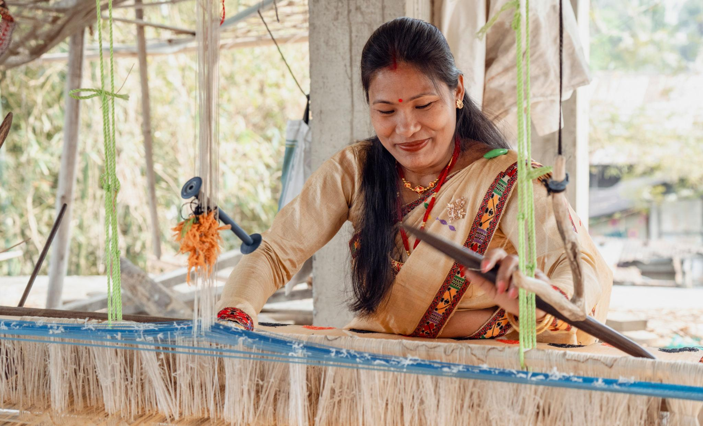
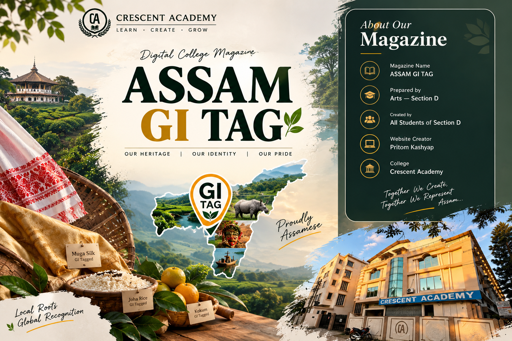
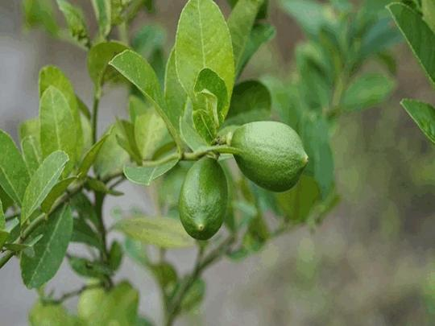
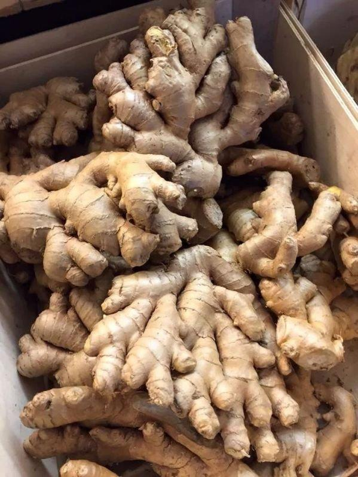
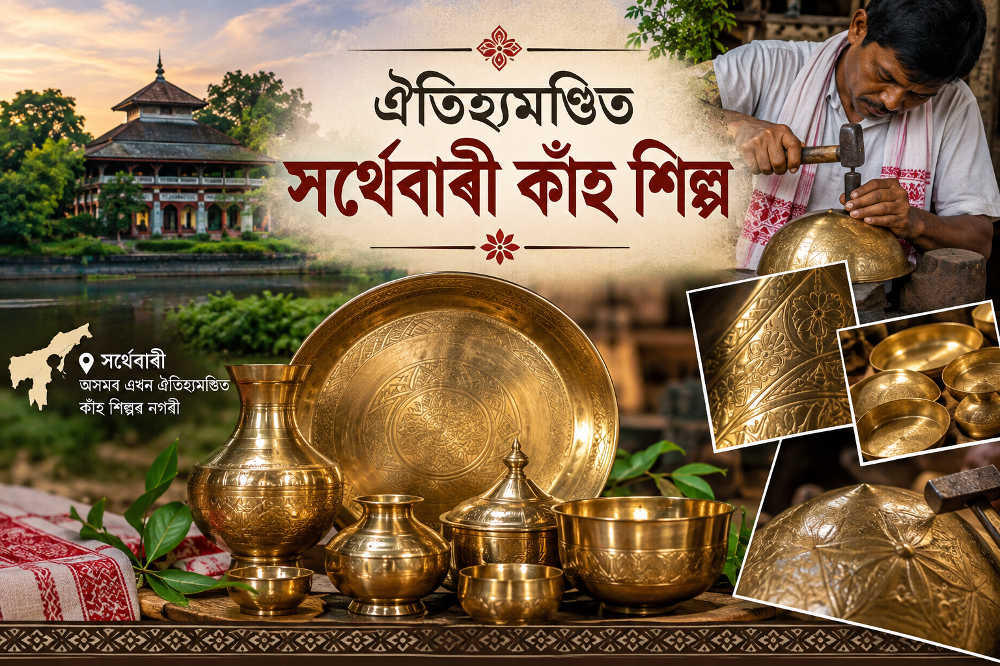
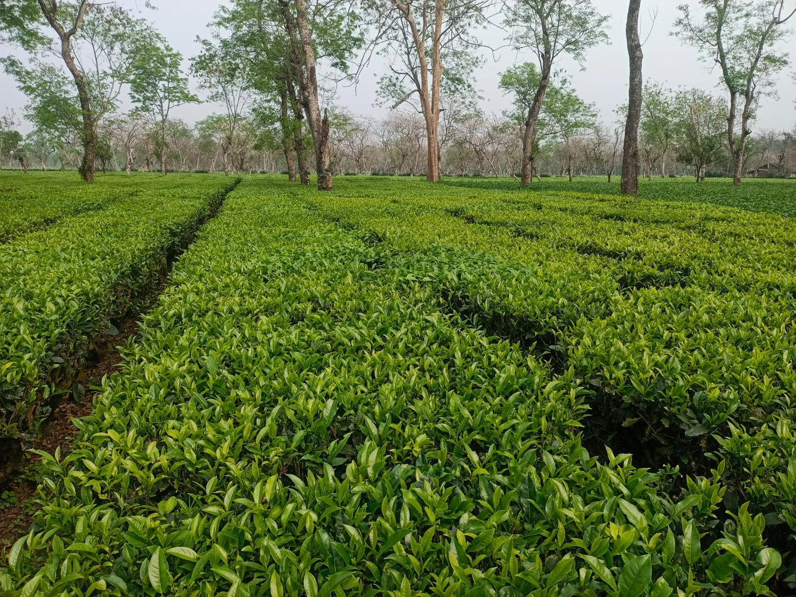
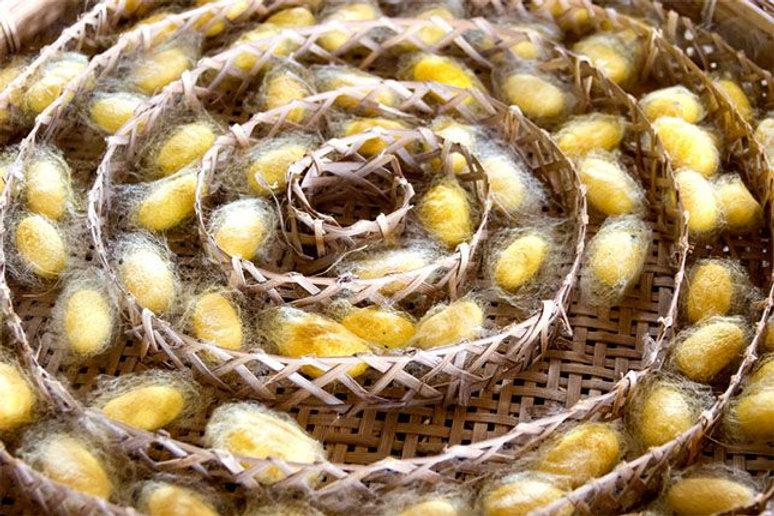
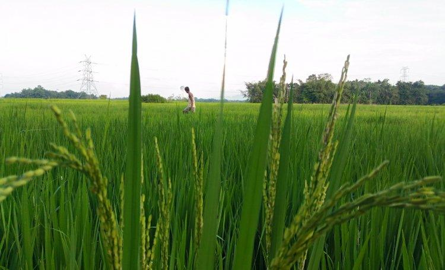

01
Muga Silk
Detailed information about Muga Silk will be added from the college magazine.
A DIGITAL COLLEGE MAGAZINE
Discover the heritage, culture, traditional products and unique identity of Assam.
Explore Magazine
01 — INTRODUCTION
A Geographical Indication (GI) Tag identifies products that originate from a particular geographical region and have qualities, reputation or characteristics associated with that region.
Assam has a rich cultural heritage, traditional knowledge and many products connected with its unique geographical identity.
✦ Detailed information from the college magazine will be added here.

02 — EXPLORE

Detailed information about Muga Silk will be added from the college magazine.

Detailed information about Kaji Nemu will be added from the college magazine.
Assam is famous for tea, silk and gamusa but one fruit that makes everyone wait every summer is Tezpur Litchi. It is not just a fruit, it is the sweet pride of Assam. It got Geographical Indication (GI) Tag in 2015.
Tezpur Litchi is grown in Tezpur, the heart of Sonitpur district. Tezpur is called the city of love and litchi. It is believed that British planters brought litchi saplings from China in the 19th century and planted them in Tezpur. The sandy loam soil of Brahmaputra and its humid weather made it the sweetest litchi in India.
Special of Tezpur Litchi is different from other litchis of India. Its skin is bright red, pulp is pearly white, very juicy and honey sweet. Its seed is very small, so you get more flesh to eat.
Before GI tagged in Assam, the litchi farmers got only Rs. 30–50 per kg from local market. Shopkeepers in Guwahati sold Bihar litchi as 'Tezpur Litchi' and customers were cheated. And there was no packing, no cold chain; litchi rotted in two days. It could not go outside Assam.
After GI tagging of Assam Litchi (2015), it protects the unique identity of Tezpur Litchi and helps the farmer to obtain better recognition and market value.
High price of litchi now Rs. 300–400 per kg. Local Tezpur Litchi growers get more than Rs. 25,000 income.
Only Sonitpur farmers can use the name 'Tezpur Litchi'. Fake sellers can be fined for Rs. 2 lakh and 3 years jail.
It also exports to Delhi, Mumbai and Dubai by air cargo. Also, many young boys started online selling on social media with 'Farm to Home' delivery.

কাৰ্বি আংলঙৰ আদা অসমৰ এক অতি উচ্চমানৰ আৰু জনপ্ৰিয় কৃষিজাত সামগ্ৰী। ইয়াৰ অনন্য গুণ আৰু বৈশিষ্ট্যৰ বাবে ভাৰত চৰকাৰে ২০১৫ চনত ইয়াক ভৌগোলিক সূচক বা জি আই টেগ প্ৰদান কৰে।
কাৰ্বি আংলং জিলাৰ পাহাৰীয়া অঞ্চল, বিশেষকৈ সিংহাসন পাহাৰ আৰু খনবামন অঞ্চলত আদাৰ প্ৰচুৰ খেতি কৰা হয়। ইয়াৰ জনজাতীয় কৃষকসকলে কোনো ধৰণৰ ৰাসায়নিক সাৰ প্ৰয়োগ নকৰাকৈ সম্পূৰ্ণ জৈৱিক পদ্ধতি আৰু পৰম্পৰাগত জুম খেতি পদ্ধতিৰে ইয়াৰ উৎপাদন কৰে।
কাৰ্বি আংলঙত ঘাইকৈ দুটা প্ৰধান প্ৰজাতিৰ আদা পোৱা যায়— নাদিয়া আৰু আইজল। নাদিয়া আদাত আঁহৰ পৰিমাণ বেছি থাকে। আনহাতে, আইজল আদাত আঁহ অতি কম বা একেবাৰেই নাথাকে। সেয়েহে ঔদ্যোগিক ক্ষেত্ৰত ইয়াৰ চাহিদা যথেষ্ট বেছি।
সাধাৰণ আদাৰ তুলনাত কাৰ্বি আংলঙৰ আদাৰ গোন্ধ অতি তীব্ৰ আৰু সোৱাদ যথেষ্ট জ্বলা। ইয়াত প্ৰচুৰ পৰিমাণে জিংজেৰল আৰু অত্যাৱশ্যকীয় তেল থাকে, যিয়ে শৰীৰৰ ৰোগ প্ৰতিৰোধ ক্ষমতা বৃদ্ধি কৰাত আৰু হজম প্ৰক্ৰিয়াত সহায় কৰে।
জি আই টেগ লাভ কৰাৰ পিছত এই আদাৰ চাহিদা বিশ্ব বজাৰত যথেষ্ট বৃদ্ধি পাইছে। শেহতীয়াকৈ এপিইডিএ (APEDA)-ৰ সহযোগত কাৰ্বি আংলঙৰ জি আই টেগযুক্ত আদা বিদেশলৈও ৰপ্তানি কৰা হৈছে। ইয়াৰ ফলত স্থানীয় কৃষকসকলৰ আয় বৃদ্ধি পোৱাৰ লগতে অঞ্চলটোৰ কৃষিভিত্তিক অৰ্থনীতিলৈও এক ইতিবাচক পৰিৱৰ্তন আহিছে।

যিসকল শিল্পীয়ে নিজৰ কঠোৰ শ্ৰম আৰু হাতৰ পৰশত ধাতুৰ বুকুত সুন্দৰ সৃষ্টি কৰে, তেওঁলোকেই হৈছে আমাৰ সমাজৰ প্ৰকৃত ঋণীকাৰ। অসমৰ ঐতিহ্য, কৃষ্টি আৰু সংস্কৃতিৰ এক অনন্য তথা গৌৰৱোজ্জ্বল অধ্যায় হৈছে বৰপেটা জিলাৰ সৰ্থেবাৰীৰ পৰম্পৰাগত কাঁহ শিল্প। ঐতিহাসিক তথ্য অনুসৰি, এই হস্তশিল্পৰ ধাৰা সপ্তম শতিকাত কুমাৰ ভাস্কৰ বৰ্মাৰ ৰাজত্বকালৰ পৰাই অসমত অত্যন্ত মৰ্যাদাৰে প্ৰচলিত হৈ আহিছে।
বৰ্তমান সময়ত বাঁহ-বেতৰ উদ্যোগৰ পিছতেই কাঁহ শিল্প অসমৰ দ্বিতীয় বৃহত্তম গ্ৰাম্য হস্তশিল্প উদ্যোগ হিচাপে পৰিগণিত। বাটি, বাতি, ঘটি আদিৰ পৰা আৰম্ভ কৰি ধৰ্মীয় আৰু মাংগলিক কাৰ্যত ব্যৱহৃত শৰাই, বৰ তাল, গগনা আদি সামগ্ৰী সৰ্থেবাৰীৰ শিল্পীসকলৰ হাতৰ পৰশত প্ৰাণ পাই উঠে।
সৰ্থেবাৰীৰ এই ঐতিহ্যমণ্ডিত শিল্পই ২০২৪ চনৰ ৩১ মে'ত এক ঐতিহাসিক স্বীকৃতি লাভ কৰে। কেন্দ্ৰীয় চৰকাৰৰ বিশেষ সহযোগিতাত এই শিল্পক আনুষ্ঠানিকভাৱে ভৌগোলিক সূচক বা জি আই টেগ প্ৰদান কৰা হয়। এই স্বীকৃতি লাভৰ লগে লগে সৰ্থেবাৰীৰ কাঁহ শিল্পই বিশ্বৰ মানচিত্ৰত এক সুকীয়া ভৌগোলিক পৰিচয় লাভ কৰিবলৈ সক্ষম হয়।
সৰ্থেবাৰীৰ কাঁহশিল্পীসকলৰ নিৰ্মাণশৈলী, ধাতুৰ সংমিশ্ৰণৰ অনুপাত আৰু হাতৰ কাৰিকৰী সম্পূৰ্ণ সুকীয়া হোৱাৰ বাবেই এই স্বীকৃতি আগবঢ়োৱা হৈছে। ইয়াৰোপৰি, বৰ্তমান বজাৰত যন্ত্ৰত নিৰ্মিত নিম্নমানৰ নকল সামগ্ৰীয়ে বজাৰখন প্ৰভাৱিত কৰি পেলাইছিল আৰু ‘সৰ্থেবাৰীৰ কাঁহ’ বুলি গ্ৰাহকক প্ৰতাৰণা কৰা হৈছিল।
কিন্তু এই আইনী স্বীকৃতিয়ে নকল সামগ্ৰীৰ প্ৰতিষেধ কৰাৰ লগতে শতিকা পুৰণি মৌলিক জ্ঞান আৰু পুৰুষানুক্ৰমে চলি অহা এই কলাক বিলুপ্ত হোৱাৰ পৰা ৰক্ষা কৰাত সহায় কৰিছে।
জি আই টেগ লাভ কৰাৰ পাছত সৰ্থেবাৰীৰ কাঁহশিল্পী সমাজ আৰু এই ঐতিহ্যময় উদ্যোগটোলৈ কেইবাটাও আশাব্যঞ্জক ইতিবাচক পৰিৱৰ্তন আহিছে। জি আই আইনৰ অনুসৰি, সৰ্থেবাৰী অঞ্চলৰ পঞ্জীয়নভুক্ত শিল্পীসকলৰ বাহিৰে অন্য কোনো ব্যৱসায়ী বা প্ৰতিষ্ঠানে নিজৰ সামগ্ৰীক ‘সৰ্থেবাৰীৰ কাঁহ’ বুলি বিক্ৰী কৰিব নোৱাৰে। ফলত মৌলিক শিল্পীসকলৰ ব্যৱসায়িক অধিকাৰ সুৰক্ষিত হৈছে।
সামগ্ৰীসমূহত চৰকাৰী জি আই ল’গ’ ব্যৱহাৰ কৰাৰ ফলত ক্ৰেতাসকলেও আচল আৰু নকল সামগ্ৰীৰ পাৰ্থক্য সহজে ধৰিব পাৰে। একেদৰে, এই ব্যৱস্থাৰ অধীনত পঞ্জীয়ন হোৱাৰ বাবে শিল্পীসকলে এতিয়া কেন্দ্ৰীয় আৰু ৰাজ্য চৰকাৰৰ বিভিন্ন কল্যাণকামী আঁচনিৰ জৰিয়তে সহজ চৰ্তত বেংকৰ ঋণ আৰু বিত্তীয় সাহায্য লাভ কৰাৰ সুযোগ পাইছে।
চৰকাৰৰ উদ্যোগত এতিয়া শিল্পীসকলক আধুনিক পেকেজিং, অনলাইন বিপণন আৰু আন্তঃৰাষ্ট্ৰীয় পৰ্যায়ত ৰপ্তানি কৰাৰ বাবে বিশেষ প্ৰশিক্ষণ আগবঢ়োৱা হৈছে। তদুপৰি, সৰ্থেবাৰীৰ কাঁহ শিল্পৰ সৰ্বাংগীণ উন্নয়নৰ বাবে চৰকাৰে এক বিশেষ আৰ্থিক পুনৰুদ্ধাৰ আঁচনি হাতত লৈছে।
ইয়াৰ অধীনত অঞ্চলটোত আন্তঃগাঁথনিৰ সম্প্ৰসাৰণ কৰাৰ লগতে এটা ‘ক্ৰাফ্ট ভিলেজ’ গঢ়ি তোলাৰ পৰিকল্পনা কৰা হৈছে, যিয়ে সাংস্কৃতিক পৰ্যটনৰো বিকাশ ঘটাব।
কেঁচামালৰ বৰ্ধিত মূল্য আৰু বজাৰ ব্যৱস্থাৰ দৰে একাংশ প্ৰত্যাহ্বান এতিয়াও শিল্পীসকলৰ সন্মুখত দেখা দি আছে। তথাপিও জি আই টেগ লাভ কৰি সৰ্থেবাৰীৰ কাঁহশিল্পীসকলৰ মনত এক নতুন আশাৰ সঞ্চাৰ হৈছে।
এই স্বীকৃতি সৰ্থেবাৰীৰ কাঁহ শিল্পৰ বাবে এক মাইলৰ খুঁটি হিচাপে পৰিগণিত হৈছে।
03 — ASSAM'S HERITAGE
অসম হৈছে প্ৰাকৃতিক সম্পদেৰে পৰিপূৰ্ণ এখন ৰাজ্য। বহু সম্পদৰ মাজত মুগা ৰেচম হৈছে অসমৰ প্ৰকৃতিৰ অন্যতম উপহাৰ। মুগা ৰেচমৰ বিশেষত্ব হৈছে ইয়াৰ সোণালী চিকচিকীয়া ৰং। “মুগা” অসমীয়া “মুগা” শব্দৰ পৰা উদ্ভৱ হৈছে, যাৰ অৰ্থ হালধীয়া।
অসমৰ জলবায়ু আৰু পৰিৱেশ মুগা পলু পালনৰ বাবে উপযোগী হোৱাৰ বাবে ইয়াত বহুদিনৰ পৰা মুগা ৰেচম উৎপাদন কৰি অহা হৈছে। পৃথিৱীৰ সকলো ঠাইত পোৱা পৰম্পৰাগত ৰেচমৰ তুলনাত ই প্ৰতিটো দিশতে উচ্চমানৰ। এই ৰেচম পৰম্পৰাগত ৰেচমতকৈ অধিক টান আৰু মজবুত।
মুগা ৰেচমে ২০০৭ চনত Geographical Indication (GI) Tag লাভ কৰিছে। GI Tag হৈছে কোনো বিশেষ ভৌগোলিক অঞ্চলৰ সৈতে জড়িত সামগ্ৰীৰ গুণ, বৈশিষ্ট্য আৰু ঐতিহ্যৰ স্বীকৃতি। মুগা ৰেচমৰ GI Tag-এ অসমৰ এই পৰম্পৰাগত সামগ্ৰীৰ স্বকীয়তা আৰু পৰিচয় সুৰক্ষিত কৰাত সহায় কৰে।
ইয়াৰ ফলত নকল সামগ্ৰীৰ পৰা মুগা ৰেচমক সুৰক্ষা দিয়াৰ লগতে মুগা পলু পালনকাৰী, শিপিনী আৰু স্থানীয় উৎপাদকসকলেও উপকৃত হ’ব পাৰে। লগতে অসমৰ সংস্কৃতি আৰু হস্তশিল্পক দেশ-বিদেশত অধিক পৰিচিত কৰাত সহায় কৰে।
মুগা ৰেচম প্ৰস্তুত কৰা হয় ‘Antheraea assamensis’ নামৰ এবিধ মুগা পলুৰ পৰা। এই পলুবিলাকে চোম গছ আৰু সোণাৰু গছৰ পাত খাই জীৱন-ধাৰণ কৰে। মুগা খেতি এক অতি জটিল আৰু কষ্টসাধ্য প্ৰক্ৰিয়া, কিয়নো ই সম্পূৰ্ণৰূপে মুকলি প্ৰকৃতিৰ ওপৰত নিৰ্ভৰশীল।
পলুৱে লেটা বান্ধিলে সেই লেটা উমাই অতি সাৱধানেৰে তাৰ পৰা সোণালী সূতা উলিওৱা হয়। এই কাপোৰত কোনো কৃত্ৰিম ৰং বা ৰাসায়নিক পদাৰ্থ ব্যৱহাৰ কৰা নহয়। মুগা কাপোৰ অতি দীৰ্ঘস্থায়ী। লগতে ইয়াৰ এক বিশেষ মহত্ব হৈছে—বোৱাৰ পিছত ইয়াৰ উজ্জ্বলতা ক্ৰমান্বয়ে বৃদ্ধি পায়।
অসমীয়া জাতীয় উৎসৱ বিহুৰ নাচনী সাজ-পোছাক মুগাৰ অবিহনে অসম্পূৰ্ণ।
“মুগা ৰেচম কেৱল এটা বস্ত্ৰ বা ব্যৱসায় নহয়; ই অসমীয়া জাতিৰ পৰিচয়, কৃষ্টি আৰু আত্মভিমান।”
এই আপুৰুগীয়া শিল্পটোক বিলুপ্ত হোৱাৰ পৰা ৰক্ষা কৰা আৰু বিশ্ব বজাৰত ইয়াৰ সঠিক মূল্য লাভ কৰাটো প্ৰতিজন অসমীয়াৰ দায়িত্ব।
04 — SOCIETY & PROGRESS
Women have played essential roles in the development of societies throughout history. Women's contributions have been vast and varied in all areas. Over time, societal expectations and opportunities for women have transformed, leading to increased participation in education, politics, science and business.
Traditionally, many cultures limited women's roles to domestic duties. Despite this, women like Queen Elizabeth and others have shaped history through leadership and vision. The 19th and 20th centuries witnessed powerful movements advocating for women's suffrage, education and workplace equality.
Today, women are leading in diverse fields—CEOs of major companies, heads of state, Nobel Prize winners and many more. Despite progress, women still face inequality in pay, representation and access to opportunities in many parts of the world.
Gender-based violence and societal stereotypes remain significant issues. The role of women in society is dynamic and continuously evolving. As we move forward, supporting education, equity and empowerment for women is essential for a balanced and prosperous global community.
“Supporting education, equity and empowerment for women is essential for a balanced and prosperous global community.”
03 — VISUAL ARCHIVE



04 — COLLEGE PROJECT
This digital magazine presents the rich heritage, culture and GI-tagged products of Assam through a creative digital platform.
A collaborative magazine project by all students of Section D.
Crescent Academy